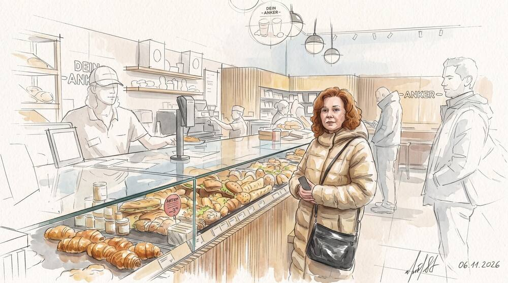
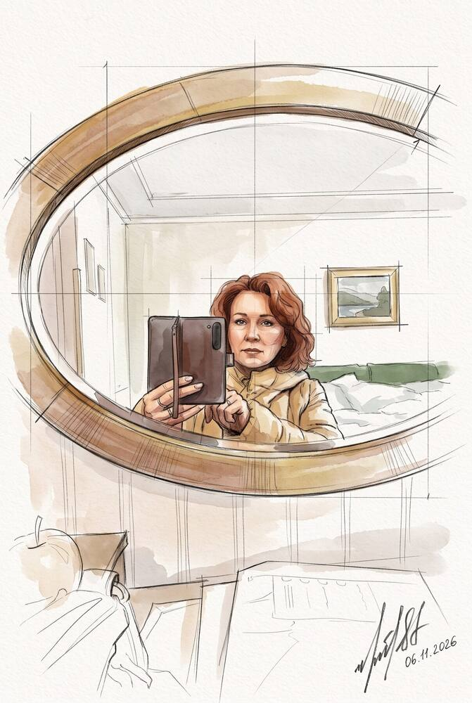
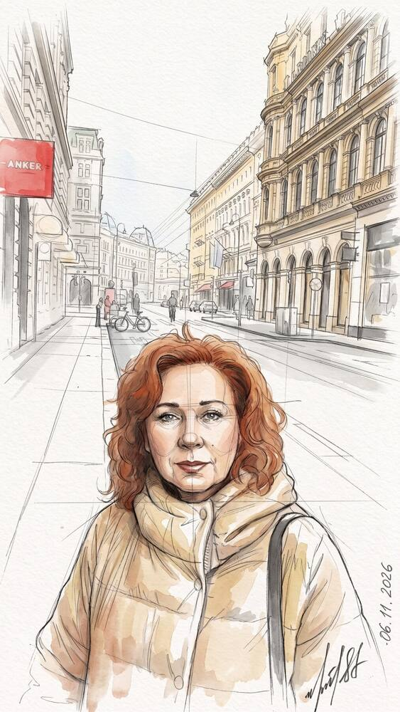
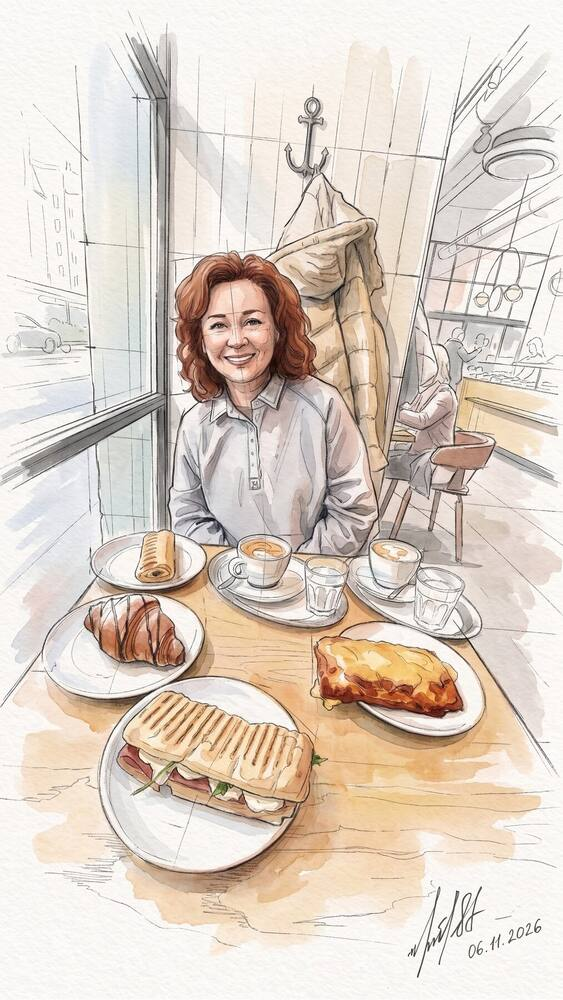
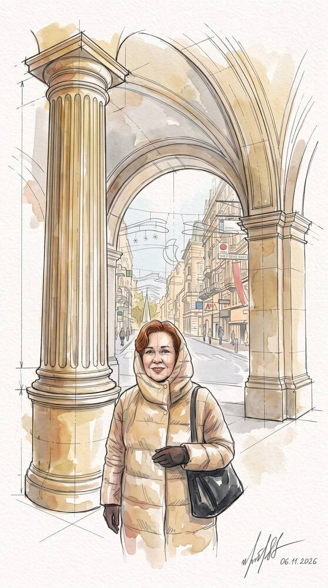
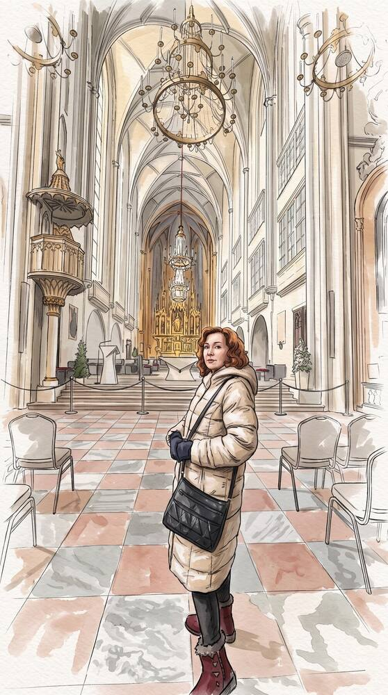
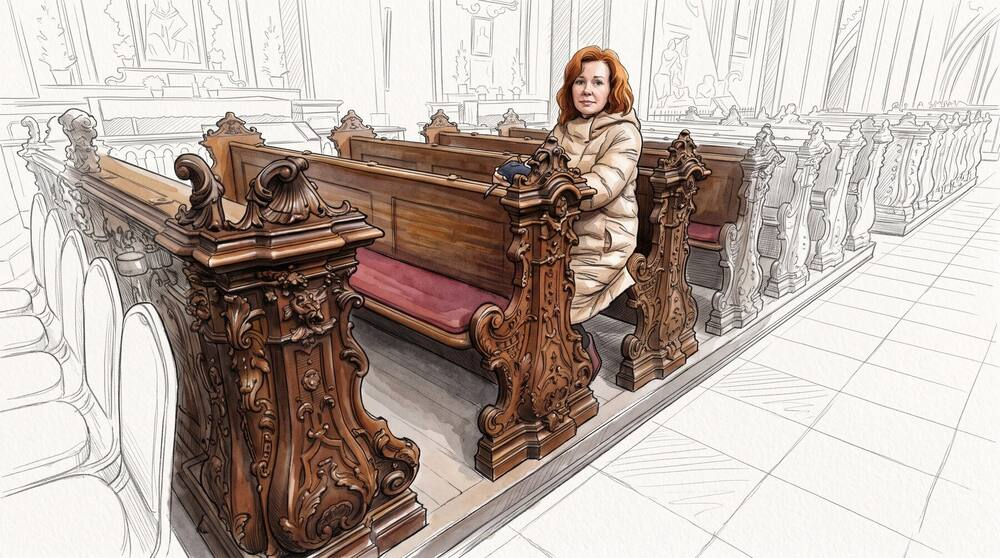
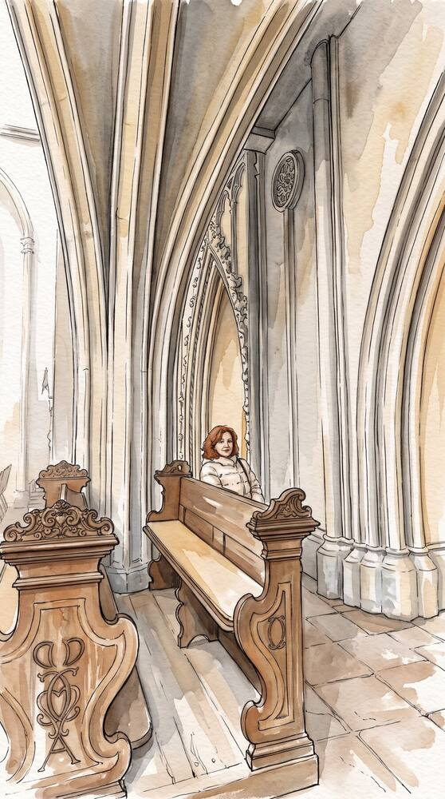
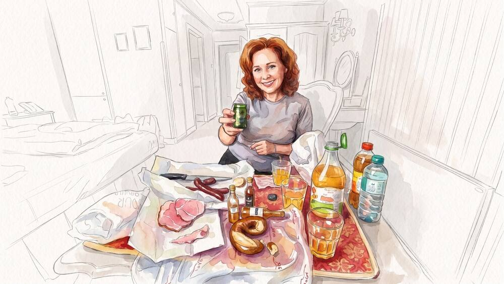

Дневник в рисунках · часть 2
Вена. 6 ноября 2026
Один неспешный день: утро в пансионе, кофе с выпечкой, Кернтнер-штрассе и тишина старой церкви.

Рисунок 03 · пекарня Anker (Анкер)
Первое настоящее венское утро. Мы живём у Оперы, в пансионе Pension Suzanne (Пансьон Сюзанн), и весь старый город — пешком, в своём ритме.
В этот день в центре открывались первые рождественские рынки — сезон в Вене начинается задолго до самого праздника. А мы выбрали тихий маршрут: завтрак, Кернтнер-штрассе, дворцовый квартал Hofburg (Хофбург — бывшая императорская резиденция).
Утро начинается тихо.

01
Утро в пансионе
Первое фото дня — в старинном зеркале нашего номера.

02
Кернтнер-штрассе
Kärntner Straße (Кернтнер-штрассе — главная пешеходная улица центра) ещё тихая и свежая.
03
Пекарня Anker
Anker (Анкер — венская пекарня) прямо за углом: витрина со свежей выпечкой.

04
Завтрак у окна
Кофе, круассан, сэндвич и штрудель — венский завтрак без спешки.
Старый город в ноябрьском свете.
Днём свернули с шумной улицы к Albertinaplatz (Альбертинаплац — площадь у музея Альбертина). Отсюда начинаются кварталы Хофбурга: арки, колонны, внутренние дворы, где когда-то ходили Габсбурги.

05
Под арками
Колонны и своды старого города, впереди — улица в ноябрьском свете.
Тишина старой церкви.
Рядом с площадью Josefsplatz (Йозефсплац) — Augustinerkirche (Августинеркирхе — Августинская церковь), придворная церковь Габсбургов. Здесь венчались императоры, в том числе Франц Иосиф и Елизавета (Сиси). Снаружи её почти не замечаешь, а внутри — высокие готические своды и тишина.

06
Под готическими сводами
Главный неф с люстрой и алтарём: Augustinerkirche (Августинеркирхе — Августинская церковь при Хофбурге).

07
Резные скамьи
Минута отдыха на старинной дубовой скамье.

08
Тишина
Высокие стрельчатые арки и резное дерево — здесь хочется просто посидеть.
Вечер дома.
Вечером — домой, на Вальфишгассе. Ноги гудят, а впечатлений на неделю.

09
Вечер дома
Ужин в номере: ветчина, сыр, сок — и тост за хороший день.
Завтра — Шёнбрунн.